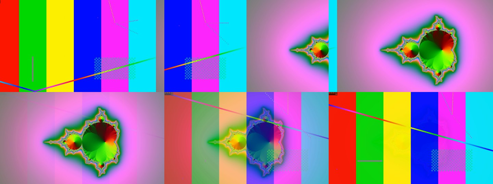
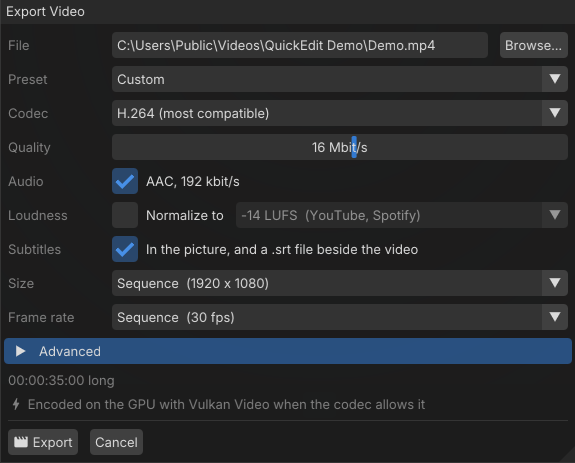

QuickEdit
QuickEditQuickEdit guide
This guide walks through a typical video: a voice-over, music under it, and pictures and texts over it. Each part stands on its own, so jump to the one you need.
Install
Download QuickEdit from the download section. It needs a GPU with Vulkan 1.3 and an up-to-date graphics driver.
- Windows: run the installer. It adds a Start menu shortcut (and a desktop one if you want it), and opens the
.qepproject files with QuickEdit. The zip runs without installing anything. - Linux: make the AppImage executable and run it:
chmod +x QuickEdit-*-Linux.AppImage ./QuickEdit-*-Linux.AppImage
The interface is in English and French: pick one in View > Language (the language of the system by default).
The window

- Media (top left): the files of the project, in folders if you like, and the sequences.
- Viewer (center): the picture at the playhead. Texts are edited right here, and the selected clip shows handles to move and scale it.
- Inspector (right): the properties of the selected clip, or of the sequence when nothing is selected (resolution, frame rate, sample rate). Its Effects tab holds the video and audio effects.
- Timeline (bottom): video tracks (V1, V2…) with the sound of their videos folded under them, audio tracks (A1, A2…) and subtitle tracks (T1…). A track higher up covers the ones below it.
Panels can be moved and resized. View > Reset Layout puts them back.
Import media
Drag files from your file manager onto the media list or straight onto the timeline, or click Import…. Videos, images and sound files are all welcome. Then drag a media from the list to a track.
Save the project early (Ctrl+S). The media in the folder of the project are stored with relative paths, so the whole folder can be moved or shared.
Edit on the timeline
- Move clips by dragging them. With snapping on (N), they stick to the playhead and to the edges of other clips. A clip dropped over others replaces what it covers.
- Trim a clip by dragging one of its edges.
- Cut at the playhead with Ctrl+K, or click with the blade tool (C).
- Remove a clip with Delete, or close the gap behind it at the same time with Shift+Delete (ripple delete).
- Select several clips by drawing a rectangle around them, or with the select-forward tool (A), which takes everything after the click.
The slip tool (Y) changes which part of a video a clip shows without moving it. A clip can be sped up or slowed down in the inspector, and Shift+F freezes the frame at the playhead.
The picture and the sound of a video are linked: they move and cut together. A video with several sound streams unfolds them under its track, each one can be muted or removed.
A project can hold several sequences, in tabs above the timeline (+ adds one). A sequence can be dropped into another one as a clip.
Zoom the timeline with Ctrl and the mouse wheel; Ctrl+0 shows all of it. Every change can be undone with Ctrl+Z.
Place the pictures

Select a clip to see its properties in the inspector:
- Size: fit the frame, fill it, or keep the native size; and the sampling (bilinear, bicubic, Lanczos or nearest, the latter for pixel art and sharp screen captures).
- Transform: position, scale, rotation and opacity. You can also drag the clip and its handles in the viewer.
- Crop & Frame: crop each side, round the corners, add a border and a shadow. Ideal for a camera in a corner of a screen recording.
- Blend mode: how the clip mixes with the tracks below it.
Animate with keyframes
Click the button just left of a property to add a keyframe at the playhead, move the playhead, and change the value: QuickEdit animates between them. The Keyframes panel, next to the timeline, shows the curves; right-click a keyframe to change its easing. The inspector also has ready-made animations such as zoom in, Ken Burns, fade in and fade out.
Texts and titles
Press T to add a text at the playhead, then type in the viewer. In the inspector, choose the alignment, the font, its size and color, an outline and a shadow, and a background box. A text can hold several parts with different styles.
Letter animation brings the text in and out letter by letter (typewriter and other effects). A text can also roll up like end credits, or crawl from the right like a ticker.

Add Title in the Edit menu gives ready-made titles to fill in: End Credits, Lower Third and News Bar.
Transitions and effects
Select a clip and press Ctrl+D to add a transition from the clip before it (or to remove it). In the inspector, choose dissolve, dip to black, push, wipe or zoom, and its duration.

The Effects tab of the inspector adds video effects to a clip or to a whole track: color correction, blur, sharpen, vignette, chroma key (green screen) and pixelate.
Shaders

Generators (pictures computed by the GPU), transitions, blend modes and resampling filters are small GLSL programs. Edit > Add Generator lists the generators; the same menu creates new shaders, or copies a built-in one to start from. The shader editor compiles as you type and shows errors on their line. Shaders can react to the sound of the sequence (level, bass, mid, treble). Yours are saved in Documents/QuickEdit/Shaders, and inside the projects that use them.
Sound
- Each audio clip shows its waveform. Drag the fade handles at its ends, and set its volume in the inspector.
- Each track has mute, solo and lock buttons, and its own effects.
- VST3 plugins can be added to a clip or to a track, from the Effects tab; their own window opens to set them.
- When you drag the playhead, you hear the sound under it (scrubbing).
- At export, the loudness can be normalized so that every video sounds as loud.
Record
A voice-over
Press R, pick the microphone, and record. The recording lands on an audio track at the playhead, while you watch the video. Recordings are saved in a Recordings folder next to the project.
The screen, a window or a camera
Press Shift+R, choose what to record (a screen, a window, or a camera with its format and frame rate), and whether to record the sound of the computer and the microphone. On Linux under Wayland, the system asks which screen or window to share, and remembers it.
A scene
Press Ctrl+Shift+R to record several sources at once: for example the screen and the camera in a corner. Place them in the frame beforehand; each one is recorded to its own file and lands on its own track, so you can still move or crop it afterwards. Scenes are saved for later.
Subtitles
Press Shift+T to add a subtitle at the playhead, or let QuickEdit write them: Generate Subtitles… transcribes the speech with whisper.cpp on the GPU (it offers to download a speech model the first time). Subtitles can also be imported from and exported to .srt files. At export, they are burnt into the picture, saved beside the video, or both.
Export
Click the export button in the toolbar (or File > Export Video…).

- File: an MP4, MOV or MKV file.
- Preset: YouTube, Shorts / Reels / TikTok, Vimeo, X, Facebook, Archive or Quick preview set everything below for you.
- Codec and quality: H.264 (the most compatible), H.265 or AV1, and the bitrate. The video is encoded on the GPU when the codec allows it.
- Loudness: normalize the sound, for example to −14 LUFS for YouTube and Spotify.
- Subtitles: in the picture, in a
.srtfile beside the video, or both. - Size and frame rate: those of the sequence, or others.
- Advanced: variable, constant bitrate or constant quality, speed against quality, and the spacing of the key frames.
AI control
QuickEdit can let an AI assistant edit the project you have open. In Edit > Preferences > AI Control, turn on the server. It listens on http://127.0.0.1:8765/mcp, on this computer only, and is off by default.
Then connect your assistant to it. With Claude Code:
claude mcp add --transport http quickedit http://127.0.0.1:8765/mcpThe assistant sees the tracks, clips, media, rendered frames and transcriptions, and can import media, cut, add texts, titles, transitions, effects, keyframes and subtitles, write its own shaders, and export. You watch it work in the window, and every edit it makes is a step of the history: Ctrl+Z undoes it.
Try: "Cut the silences of the voice-over, put the music 12 dB under it, and add a lower third with my name at the start."
Shortcuts
| Keys | Action |
|---|---|
| Space | Play / pause |
| ← → | Previous / next frame |
| Home End | Start / end of the sequence |
| Ctrl+K | Split at the playhead |
| Delete / Shift+Delete | Delete / ripple delete |
| V C Y A | Select, blade, slip, select forward |
| N | Snapping |
| T / Shift+T | Add a text / a subtitle |
| Shift+F | Freeze frame |
| Ctrl+D | Add or remove a transition |
| R / Shift+R | Record a voice-over / the screen |
| Ctrl+Shift+R | Record a scene |
| Ctrl+Z / Ctrl+Y | Undo / redo |
| Ctrl+wheel, Ctrl+0 | Zoom the timeline, show all of it |
Something missing or not working? Open an issue.